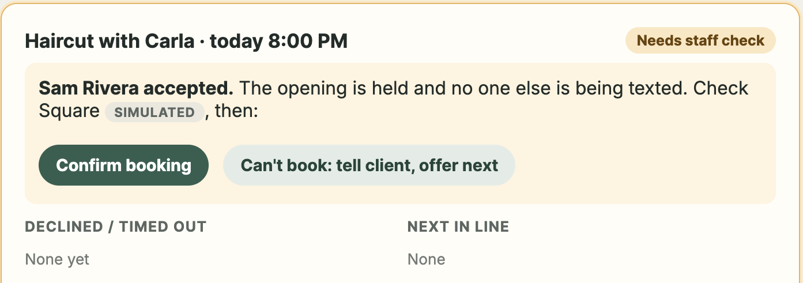
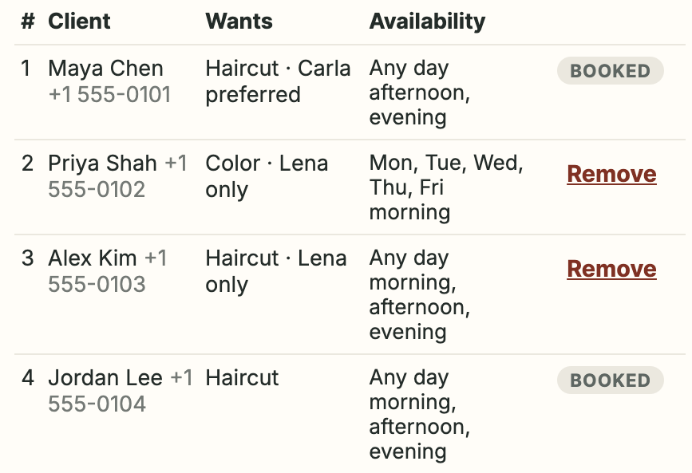

Juniper Salon · What we heard
↻ Repeats until the slot is filled or the day runs out
What the prototype does

Sam accepted the 8:00 PM opening. It is held while staff check Square.

Maya and Jordan were booked into earlier openings, so they are marked Booked and weren’t offered this one.
Prototype dashboard, demo timing (30-second reply window; normally 15 minutes). Sample clients only.
Where the prototype stands
Covered by automated tests and checked on a local setup
Stand-ins so the process can be shown safely
Needed before real use
Recommended next step
Start counting now: cancellations, slots filled, and time spent texting give the pilot a baseline. No results are claimed yet; they will come from the pilot.